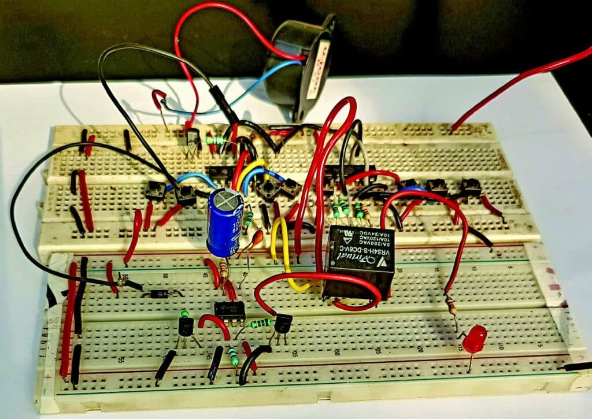
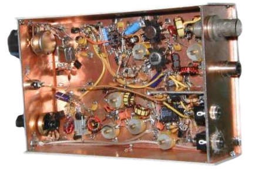

Welcome To My World
Topic: Mobile Phone Signal Detector!
Overview
This circuit functions as a mobile phone signal detector. It can sense the presence of an active mobile phone within a radius of three to four meters, triggering an LED (or optionally, a buzzer) to indicate detection.
This makes it particularly useful for environments like examination halls or meeting rooms where mobile phone use is prohibited.

.jpg)

Functionality
The circuit detects outgoing and incoming calls, SMS, Internet usage, and any data transmission from mobile phones, even in silent mode.
Circuit Diagram
Here's a simplified representation of the circuit. Ensure to connect components as per the standard electronics practices.
Components
- 555 Timer IC (IC1, IC2)
- IC1 and IC2 are configured as astable multivibrators.
- These ICs produce continuous pulse trains at specific frequencies, which are essential for jamming mobile phone signals.
- The frequencies generated need to cover the mobile phone frequency bands (generally 800-900 MHz and 1800-1900 MHz).
- Resistors (R1, R2, R3, R4)
- They form timing networks with capacitors (C1, C2, C3, C4) to determine the frequency of the oscillation generated by the 555 timers.
- R1 and R2 are part of the timing circuit for IC1, while R3 and R4 are for IC2.
- Capacitors (C1, C2, C3, C4, C5)
- C1 and C2: Work with R1 and R2 to set the frequency of the oscillation for IC1.
- C3 and C4: Work with R3 and R4 to set the frequency of the oscillation for IC2.
- C5: Acts as a bypass capacitor, filtering out any noise and stabilizing the power supply to ensure smooth operation.
- Inductors (L1, L2)
- L1 and L2 form part of an LC circuit with the capacitors, which determines the resonant frequency.
- They help to ensure that the jamming signal is within the mobile phone frequency bands.
- They also help in impedance matching to ensure efficient transmission of the jamming signal through the antenna.
- Variable Resistor (VR1)
- VR1 is used to fine-tune the frequency generated by the 555 timer circuits.
- By adjusting VR1, the user can change the resistance, thus altering the frequency of the square wave output from the 555 timers to better match the target mobile phone frequency bands.
- Antenna (ANT1)
- The antenna broadcasts the generated jamming signal into the air.
- It ensures that the jamming signal can propagate through space and interfere with mobile phone communications.
- Transistors (Q1, Q2)
- Q1 and Q2 receive the oscillating signal from the 555 timers and amplify it.
- The amplified signal is necessary to ensure that the jamming signal is strong enough to disrupt mobile phone communications within the desired range.
- They effectively increase the power of the signal before it is transmitted by the antenna.
- Power Supply
- The circuit requires a stable DC power supply to function correctly.
- The power supply could be a battery or an external DC source, ensuring the 555 timers, transistors, and other components have sufficient power to operate.
Working Principle
- Signal Generation
- 555 Timer ICs generate continuous square wave signals at specific frequencies.
- Frequency is determined by resistors, capacitors, and a variable resistor for fine-tuning.
- Signal Amplification
- Transistors amplify the low-power signal generated by the 555 timers.
- Impedance Matching and Filtering
- Inductors and capacitors form LC circuits that select the correct jamming frequencies and ensure efficient signal transmission.
- Signal Transmission
- The amplified signal is transmitted as electromagnetic waves through the antenna.
- Interference Creation
- The transmitted signal interferes with mobile phone signals by broadcasting on the same frequency bands, creating noise and disrupting communication.
How the Jammer Works
- Disruption of Signals
- The transmitted jamming signal interferes with mobile phone signals, preventing communication with the cellular tower.
- This results in a loss of signal for any mobile phone within the effective range of the jammer.
Notes
- Legal Considerations
- Using a cell phone jammer is illegal in many countries.
- They can interfere with emergency communications and other important services.
- Safety Precautions
- Ensure the circuit is built and tested safely to avoid unintended interference with critical communications.
Assembly Tips
- PCB Design: Design a custom PCB for a reliable and compact circuit.
- Soldering: Ensure all connections are solid to avoid signal loss.
- Testing: Test the circuit in a controlled environment to adjust sensitivity.
If You Need More information about this project : click here